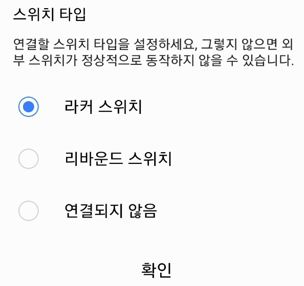
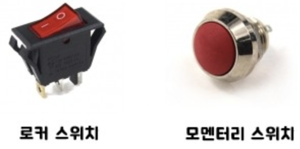
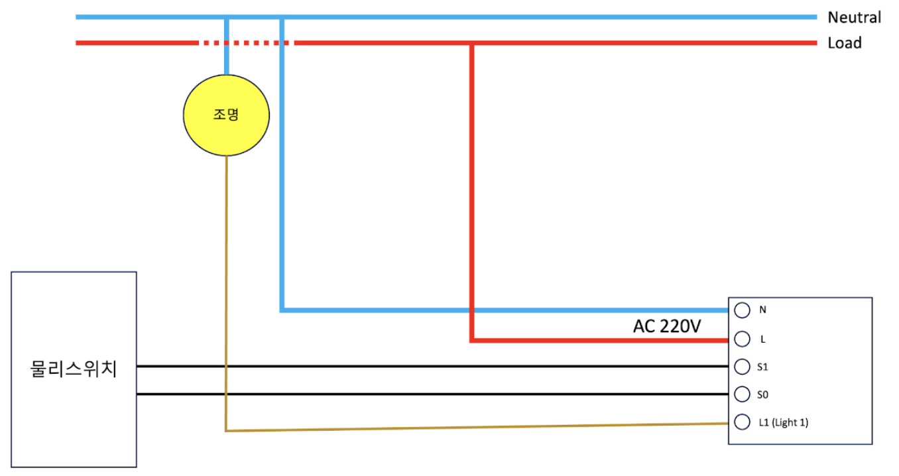
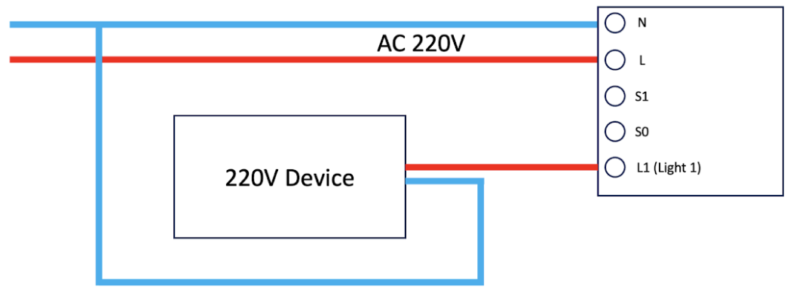
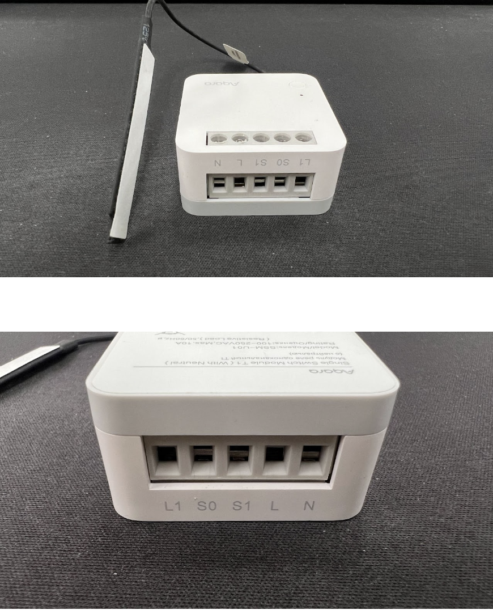

38 싱글 스위치 모듈 T1 (중성선)
38.1 설치
질문 1: 싱글 스위치 모듈 T1의 설치 방법을 알 수 있을까요?
답변 1:
싱글 스위치 모듈 T1의 설치 영상과 매뉴얼은 아래 링크를 클릭하시면 보실 수 있습니다.
질문 2: 싱글 스위치 모듈은 어디에 설치할 수 있나요?
답변 2:
싱글 스위치 모듈은 조명을 제어하기 위해 벽면함, 천장, 천장 조명에 설치될 수 있습니다. 또한 일반적인 벽면 소켓의 케이스에 설치하여 스마트 벽면 소켓으로 변환할 수도 있으며, 충분한 내부 공간과 적합한 전기적 성능을 갖춘 배기 팬, 전기 온수기 및 기타 강력한 전기 기기에도 설치할 수 있습니다. 전기 지식과 손재주에 대한 요구가 높기 때문에 전문가들이 설치해야 합니다.
질문 3: 싱글 스위치 모듈의 배선 단자는 어떻게 연결해야 하는 지요?
답변 3:
뒷면에는 L1, S0, S1, L 및 N과 같이 5개의 배선 단자가 있습니다. 이 중에는 조명이나 소켓과 같은 부하선이 L1에 연결되고, 라이브선이 L에 연결되며, 중성선이 N에 연결됩니다.
S0와 S1에 대한 세 가지 연결 방법이 있습니다:
(1) 외부 스위치의 양쪽 끝에 각각 연결합니다.
(2) S0를 외부 스위치의 한쪽 끝에 연결하고, S1은 비활성화합니다. 다른 끝은 라이브선에 연결합니다.
(3) 외부 스위치가 없는 경우 연결할 필요가 없습니다. 처음 두 가지 연결 방법은 외부 스위치를 통해 싱글 스위치 모듈 T1의 제어를 실현할 수 있습니다.
질문 4: 싱글 스위치 모듈의 안테나 배치 방법을 알려 주세요.
답변 4:
컨트롤 모듈이 패트레스에 설치된 경우, 안테나를 플라스틱 케이스의 측면 벽에 부착하고 벽과 평행하도록 유지하는 것이 좋습니다. 스위치 패널 지지대가 플라스틱으로 제작된 경우, 안테나가 벽으로부터 10mm 이상 떨어져 있는 것이 좋습니다. 스위치 패널 지지대가 금속으로 제작된 경우, 안테나가 벽으로부터 15mm 이상 떨어져 있는 것이 좋습니다(금속 지지대); 또한 안테나는 제어 모듈의 본체와 교류 케이블에서 가능한 한 멀리 떨어져 있어야 합니다(권장 거리는 15mm 이상입니다). 만약 금속 패트레스에 설치된 경우, 안테나를 플라스틱 스위치 패널에 설치하는 것이 좋지만, 패널에 충분한 공간이 필요합니다. 천장이나 조명 내부에 설치된 경우, 안테나는 금속에 부착되지 않도록 피하고, 과도한 차폐를 피해야 합니다.
38.2 사용 팁
질문 1: 싱글 스위치 모듈은 어떤 타입의 외부 스위치와 연결할 수 있나요?
답변 1:
록커 스위치(양방향) 또는 리바운드 스위치(단방향)와 연결할 수 있습니다. 외부 스위치와 연결한 후에는 앱에서 설정해야 합니다. 기본 연결은 록커 스위치입니다.
- 싱글 스위치 모듈은 업계에서 ’이너릴레이’로 불립니다. 앱 설정에 따라 모멘터리(무선 리바운드 스위치) 스위치와 연결하여 사용할 수 있습니다.(스마트 씽즈에서도 옵션이 반영되어 있습니다.)

- 참고로, 로커 스위치와 리바운드(모멘터리) 스위치는 다음과 같습니다.
- 로커 스위치: 켜거나 끄면 그 상태 유지
- 리바운드(모멘터리) 스위치: 누를 때만 접점이 유지됨 (이너릴레이의 리바운드 스위치 모드는 모멘러리 스위치를 누를 때마다 릴레이가 ON/OFF 됩니다.)

질문 2: 싱글 스위치 모듈은 로커 스위치 또는 모멘터리 스위치와 어떻게 연결이 되나요?
답변 2:
일반 시공은 물리 스위치를 S0, S1에 연결하고 스위치 박스로 중성선을 시공 후 스위치 박스 내에 이너릴레이를 체결하여 사용합니다.

질문 3: 싱글 스위치 모듈을 일반 전기 장치의 전원 ON/OFF 용으로 사용할 수 있는지요?
답변 3:
네 가능합니다. 다음과 같이 연결하실 수 있습니다. 참고로 스마트 플러그의 동작 원리와 같습니다.

질문 4: 싱글 스위치 모듈을 네트워크 연결 상태로 만들기 위해서 어떻게 해야 하나요?
답변 4:
싱글 스위치 모듈을 네트워킹 상태로 전환하는 방법은 세 가지가 있습니다:
(1) 싱글 스위치 모듈 T1이 네트워크에 연결되지 않은 경우, 전원을 켜면 자동으로 네트워킹 상태로 전환되어야 하며, 이 상태를 유지해야 합니다. 30초 동안 유지되어야 합니다.
(2) 싱글 스위치 모듈 T1의 버튼을 8초 동안 눌러 네트워킹 상태로 들어갈 수 있으며, 이 상태를 유지해야 합니다. 30초 동안 유지되어야 합니다.
(3) 외부 스위치를 통해 5회 켜고 끄면 싱글 스위치 모듈 T1이 네트워킹 상태로 전환되어야 하며, 이 상태를 유지해야 합니다. 30초 동안 유지되어야 합니다.
질문 5: 싱글 스위치 모듈을 휴대폰에 직접 연결할 수 있나요?
답변 5:
싱글 스위치 모듈은 상호 작용 및 원격 제어와 같은 기능을 실현하기 위해 호환되는 허브에 연결해야 합니다. 배선이 완료된 후에는 아카라홈 앱을 열고 우측 상단 “…”을 누르고, “장치 추가”를 클릭하여 옵션에서 해당하는 “싱글 스위치 모듈 T1(중성선 필요)”을 선택한 다음 지시에 따르십시오.
질문 6: 싱글 스위치 모듈과 헙의 최대 허용 거리는 얼마인가요?
답변 6:
두 장치 간의 유효 거리는 벽이 있는 경우 7 ~ 10미터이며, 이는 벽의 재질, 두께 및 주변 환경 조건에 따라 달라질 수 있습니다. 두 장치 사이에 더 많은 벽이 있는 경우 거리를 줄이는 것이 좋습니다
질문 7: 싱글 스위치 모듈을 정상적으로 작동시키기 위한 조명의 전력은 얼마인가요?
답변 7:
중성선이 연결 되므로, 최소 부하 요구 사항은 없지만, 총 채널의 최대 부하는 2200W (저항 부하)를 초과해서는 안 됩니다.
질문 8: 싱글 스위치 모듈은 이중 제어 또는 다중 제어를 지원합니까?
답변 8:
먼저, 무선 스위치와 함께 싱글 스위치 모듈을 사용하면 이중 제어/다중 제어를 매우 쉽게 실현할 수 있습니다. 무선 스위치는 가정의 대부분 위치에 배치하여 싱글 스위치 모듈을 협동적으로 제어할 수 있습니다.
전통적인 이중 제어 스위치가 설치되어 있는 경우, 싱글 스위치 모듈을 제어 장치나 장치 근처의 케이스에 설치할 수 있습니다. 원래 스위치는 부하 선의 라인 끝에서 S0 배선 단자으로 연결되고, S1은 연결되지 않습니다. L1/L 배선 단자은 정상적으로 연결되며, 원래의 이중 제어 라인을 유지하여 이중 제어를 실현할 수 있습니다.
질문 9: 싱글 스위치 모듈의 크기는 어떻게 되는지요?
답변 9:
싱글 스위치 모듈의 크기는 다음과 같습니다.
L42.9*W40*H19.9mm

38.2.1 Troubleshoot
질문 1: 싱글 스위치 모둘을 놓을 공간이 충분하지 않는 경우 어떻게 해야 하는지요?
답변 1:
(1) 소켓 내에서 전선을 가로질러 배치하고, 소켓 내에서 초과 길이의 전선을 적절한 길이로 자르는 것을 고려할 수 있습니다. 이를 통해 더 많은 공간을 확보할 수 있습니다.
(2) 천장이나 천장 조명에 놓을 수 있지만, 빛의 발광 및 발열 부분으로부터 최대한 멀리 떨어뜨려야 합니다.
(3) 전문가에 의해 소켓 깊이를 확장하는 것을 고려할 수 있습니다.
질문 2: 배선 단자가 잘못 연결될 경우, 단락(합선)이 발생하나요?
답변 2:
못된 배선의 경우 싱글 스위치 모듈 T1이 손상되거나 작동하지 않을 수 있습니다. 엄격히 배선 지침을 준수하거나 전문 전기 기술자에게 설치하는 것이 좋습니다!